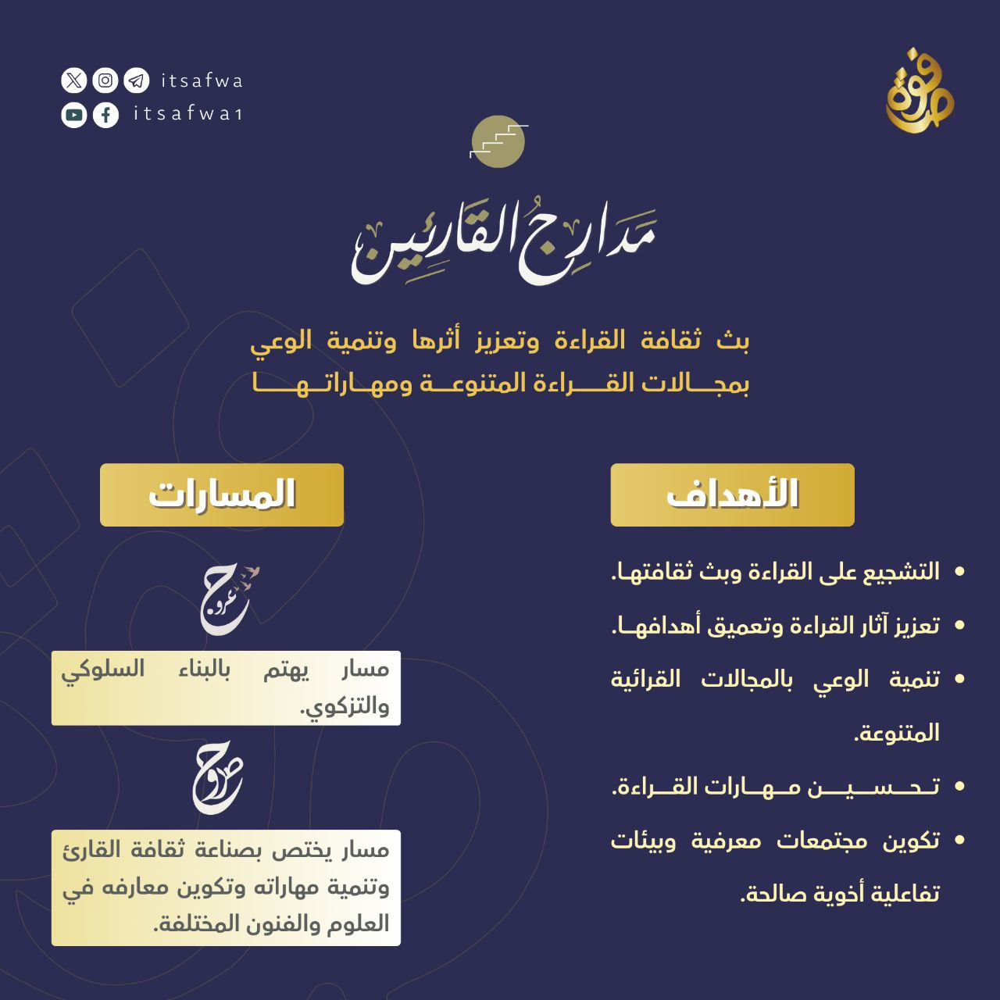

مدارج القارئين
مبادرة تهتم ببث ثقافة القراءة وتعزيز أثرها وتنمية الوعي بمجالات القراءة المتنوعة ومهاراتها.
الأهداف العامة:
- التشجيع على القراءة وبث ثقافتها.
- تعزيز آثار القراءة وتعميق أهدافها.
- تنمية الوعي بالمجالات القرائية المتنوعة.
- تحسين مهارات القراءة.
- تكوين مجتمعات معرفية وبيئات تفاعلية أخوية صالحة.
مسارات المبادرة:
مسار صروح
مسار يختص بصناعة ثقافة القارئ وتنمية مهاراته وتكوين معارفه في العلوم والفنون المختلفة.
البرامج:
بوابة القراءة
برنامج تأهيلي يسعى إلى صناعة عادة القراءة وتنمية الوعي بأهميتها ومهاراتها ووسائلها من خلال خطوات عملية متدرجة تشمل لقاءات حصرية وقراءات فردية وجماعية وجلسات نقاشية وأنشطة تطبيقية ومواد إثرائية.
مسار عروج
مسار يهتم بالبناء السلوكي والتزكوي.
البرامج:
قوت
برنامج قراءة الرسائل التزكوية القصيرة.

مدارج الأدب
مبادرة ثقافية متخصصة في تصميم برامج معرفية وإنتاج خطط قرائية تساهم في: إحياء روح الاعتزاز باللغة العربية وتقريب الأدب العربي وكتبه وتنمية ملكة البيان والتذوق.
الفئة المستهدفة:
المهتمون باللغة العربية والأدب العربي وشداة الثقافة وطلبة العلم خصوصًا، وأبناء العربية عمومًا.
الأهداف العامة:
- عمل مساقات علمية تعين على تكوين الملكة الأدبية.
- تصميم برامج متنوعة تُعرِّف بعيون التراث الأدبي العربي وتقرِّبها إلى الجمهور.
- عمل برامج وإنتاج مواد تُعَزِّز الوعي اللغوي وتعمِّق الثقافة العربية.
- تقديم مكتبة مرئية واسعة تُثرِي طالب الأدب والعربية.
- بثُّ ثقافة مناقشات الكتب وتنميتها عند القراء.
- إيجاد بيئة تفاعلية نشطة تحفز القراء وتُساعد على تبادل المعرفة.
مسارات المبادرة:
مسار مرقاة
- تحصيل ما يحتاجه الأديب من ثقافة ومعرفة باللغة والتاريخ وغيرها من المعارف الأدبية.
- الاطلاع على الكتب والمدونات الأساسية في الأدب العربي.
- تعزيز مهارات قراءة الكتب والنصوص الأدبية العربية.
- تعزيز مهارات الكتابة العربية.
البرامج:
1. بوابة الأدب: مدخل إلى الأدب العربي
بوابة الأدب هو أول برامج الأدب العربي ضمن مسار مرقاة، ويقدم مدخلًا مُيسَّرًا إلى الأدب العربي يجمع بين التأسيس المنهجي وبين العرض التاريخي، مع قراءة نصوص أدبية مُنتخبة، ولقاءات نقاشية، وأنشطة تطبيقية، ومواد إثرائية؛ تهدف إلى تنمية مهارات القراءة الأدبية، ورسم الخارطة المعينة لتكوين الملكة الأدبية.
2. زبدة الأدب: تكوين أصول الثقافة الأدبية
هو ثاني برامج مسار مرقاة، نهدف فيه إلى تكوين أصول الثقافة الأدبية للمتأدبين، وتتوزع العلوم والمعارف على تسعة فروع: الثقافة العربية، متن اللغة، تاريخ الأدب، مصادر الأدب، مهارات القراءة الأدبية، الشعر والنثر، إعجاز القرآن، الكتابة والإنشاء، النقد الأدبي. وتضم تكليفات البرنامج قراءات ومواد مسموعة وأنشطة ونقاشات.
3. غور الأدب: قراءة أصول الأدب العربي
ثالث وآخر برامج مسار مرقاة، نقرأ فيه أصول الأدب العربي ونتعمق في تاريخه وفنونه. تتوزع المعارف على ثلاثة مساقات: تاريخ الأدب والثقافة العربية، النثر والكتابة والإنشاء، الشعر والنقد الأدبي. يضم قراءات ومواد مسموعة وأنشطة كتابية وتقويمات.
مسار جمهرة
- قراءة كل المؤلفات الخاصة بالأدباء الذين لهم نتاج أدبي رائق.
- التعرف على الأدباء المتميزين والكشف عن جوانب شخصياتهم.
- التدريب على الكتابة الأدبية من خلال محاكاة الأدباء.